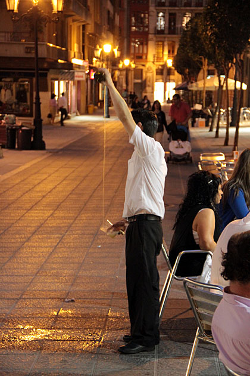
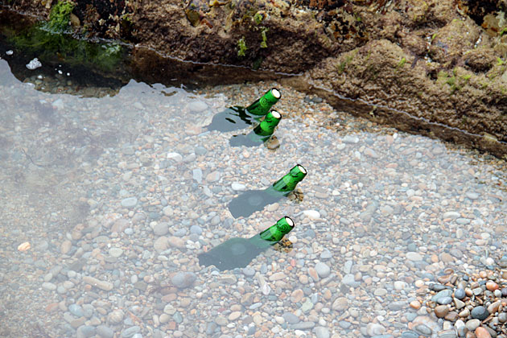
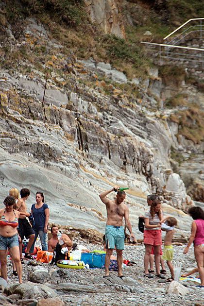

First-Time Cider
Learning about El Escanciado
Cider (sidra) is a way of life in Asturias. Asturians drink cider at all times of the day, wherever they are. On the beach, in their houses, with lunch, with dinner and probably breakfast, before going to bed, when they’re happy, sad or bored. Sidrerías blanket Oviedo, particularly on Calle Gascona, otherwise known as the Boulevard of Cider.

Despite having the energy level of celery on our first full day in Oviedo, we couldn’t resist sampling it. We sat down at a sidrería close to our house, and ordered a bottle. As soon as it was set down on the table, I greedily reached for it, but the waiter snatched the bottle deftly away from my grabby hands, tut-tutting as he did so. And then, he provided our first lesson in the art of El Escanciado.
Drinking cider is not as easy as cracking open a beer. Made from apples, it’s a completely natural beverage and bottled without any gas. So the cider must be poured from a height, aerating it as it splashes into the glass. Our waiter held the bottle high over his head, and the glass down at waist level. Without looking at either bottle or glass, he started pouring, splashing a ton of cider onto the ground, and then pushed the glasses into our hands instead of setting them onto the table. The cider was delicious, with an unexpectedly tangy punch. The glasses were only filled the glass to an inch, so we were ready for more in about two seconds. But we had quickly picked up that pouring your own cider is improper ettiquite, so we had to wait until he came back around to our table to perform the ritual again.
The slow drinking is conducive to a long evening out with friends, and the small portions and low alcohol content would make it difficult to get drunk on cider. Plus, it’s cheap (we paid €2,50 per bottle), so there’s no need to worry about ordering another round.
Yep, I think that we’ll be sampling a good percentage of Oviedo’s sidrerías during our time here. And we’ll have to get practicing on our Escanciado skills right away.


(Article from: http://oviedo.for91days.com/2010/08/01/first-time-cider-learning-about-el-escanciado/)